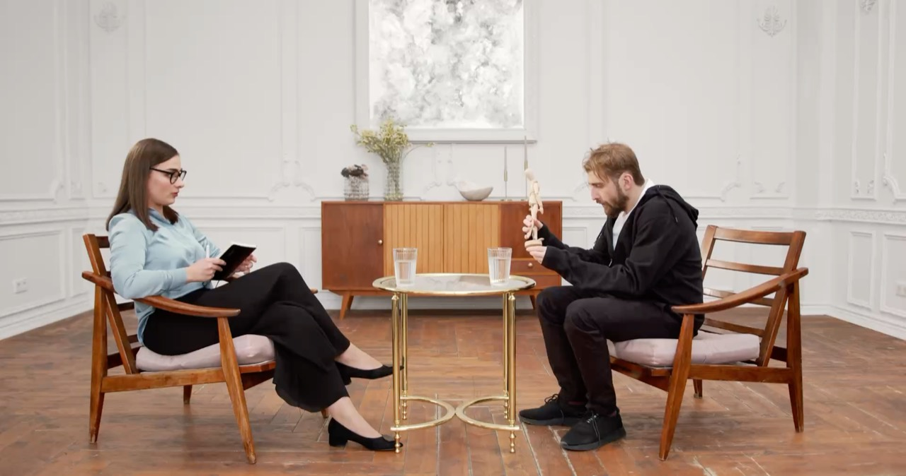
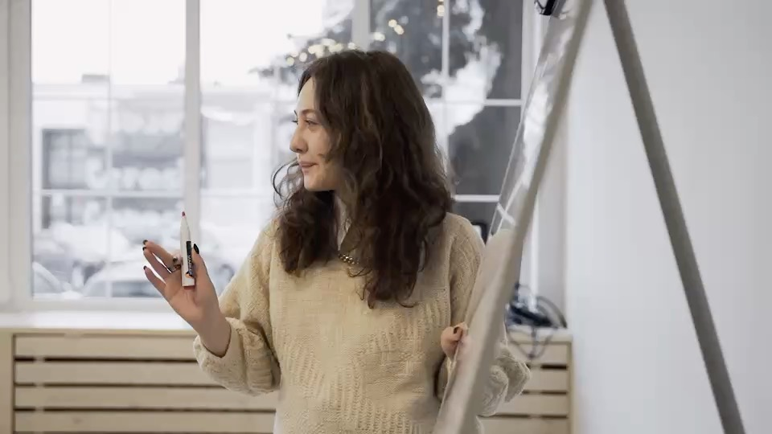

Format eins
Einzelgespräch
Unter vier Augen. Für eine einzelne Frage, die drängt, oder als Reihe, wenn ein Thema mehr Raum braucht.
- Für
- Sie allein
- Ort
- Mein Raum in Berlin, bei Ihnen oder per Video
- Rahmen
- Einzeln oder als Reihe
Coaching für Führungskräfte · Berlin
Ich begleite Menschen, die führen. In ruhigen Gesprächen, mit genauen Fragen und ohne fertige Rezepte.
Fer·ma·te, die. Zeichen aus der Notenschrift: ein Bogen über einem Punkt. Es bedeutet, dass ein Ton länger klingen darf, als der Takt es vorsieht.
Für wen
Sie haben zum ersten Mal ein Team übernommen und führen jetzt Menschen, die gestern noch Ihre Kollegen waren.
Sie führen seit Jahren und merken, dass das, was bisher getragen hat, nicht mehr reicht.
Sie stehen vor einer Entscheidung, die Sie im eigenen Haus mit niemandem besprechen können.
Sie haben gegründet, das Unternehmen wächst, und Führung ist plötzlich Ihr Hauptberuf.
Im Gespräch wird es zuerst leiser. Dann sortiert sich, was zählt.
Themen
Sie bringen Ihr Thema mit. Diese fünf höre ich oft.
Was für eine Führungskraft wollen Sie sein, und was braucht Ihr Team gerade von Ihnen? Wir schauen auf Ihre Rolle, auf Ihre Wirkung und auf das, was Sie loslassen dürfen.
Wenn alles gleichzeitig wichtig scheint, hilft es, die Dinge einmal laut zu ordnen. Am Ende steht oft kein neuer Plan, sondern ein klarerer Blick auf den alten.
Kritik, Trennung, Konflikt, die Bitte um mehr Verantwortung: Manche Gespräche schiebt man, gerade weil man sie gut führen möchte. Wir bereiten sie vor. Satz für Satz, wenn Sie mögen.
Bleiben oder gehen, wachsen oder halten, zusagen oder ablehnen. Ich entscheide nicht für Sie. Ich helfe Ihnen zu sehen, was Sie schon wissen und was noch fehlt.
Neue Rolle, neues Unternehmen, Übergabe an die nächste Generation: In Übergängen gilt das Alte nicht mehr und das Neue noch nicht. Ein guter Moment, um nicht allein zu sein.
Das Gespräch
Mehr braucht ein gutes Gespräch selten. Manchmal frage ich, manchmal schweige ich. Und manchmal stellen wir eine Lage mit Figuren auf den Tisch, damit Sie sie einmal von außen sehen.

Arbeitsweise
Wir sprechen kurz und unverbindlich. Sie erzählen, worum es geht. Ich sage offen, ob und wie ich helfen kann.
Im ersten Gespräch klären wir, wo Sie stehen, was sich ändern soll und woran Sie merken würden, dass es sich geändert hat.
Wir treffen uns in dem Abstand, der zu Ihrem Alltag passt. Dazwischen probieren Sie aus, was wir besprochen haben.
Wir schauen zurück: Was hat sich bewegt, was bleibt offen, was tragen Sie allein weiter? Ein Coaching hat ein Ende, und das ist gut so.
Formate
Format eins
Unter vier Augen. Für eine einzelne Frage, die drängt, oder als Reihe, wenn ein Thema mehr Raum braucht.

Format zwei
Ein Tag außerhalb des Tagesgeschäfts für Ihr Führungsteam. Wir klären Rollen, sprechen an, was im Alltag untergeht, und halten fest, was Sie sich vornehmen.
Format drei
Für Übergänge und größere Vorhaben. Wir verabreden einen festen Rhythmus und einen kurzen Draht dazwischen. So bleibt, was Sie sich vornehmen, nicht beim Vorsatz.
Haltung
Über mich
Coach und Beraterin für Führungskräfte
Ich höre zu, frage nach und sage, was ich wahrnehme. Viel mehr Werkzeug brauche ich selten.
Beispieltext Hier stehen Ihre Stationen: woher Sie kommen, was Sie geprägt hat und warum Sie diese Arbeit machen.
Vorab
So lange, wie es Ihnen nützt. Manche kommen mit einer einzelnen Frage, andere über einen längeren Abschnitt. Den Rahmen legen wir am Anfang fest und prüfen ihn unterwegs.
Häufig ja. Ich arbeite mit Menschen, die selbst kommen, und im Auftrag von Unternehmen. Was besprochen wird, bleibt in beiden Fällen zwischen uns.
Beides geht. Für den Anfang empfehle ich ein Treffen im selben Raum. Danach richten wir uns nach Ihrem Kalender.
Dann sagen wir es einander. Genau dafür ist das Kennenlernen da, und auch später können Sie jederzeit aufhören.
Kennenlernen
Das Kennenlernen ist kostenlos und verpflichtet Sie zu nichts. Danach wissen Sie, ob Sie mit mir arbeiten möchten.
Dies ist eine Beispielseite. Ihre Angaben werden nicht gesendet.